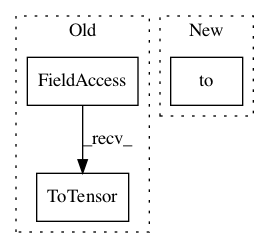

0de148f6892361e61d4b68cf97814e73692f6b1a,docs/_static/examples/gan.py,,,#,124
Before Change
// Configure data loader
os.makedirs("./data/mnist", exist_ok=True)
transform = transforms.Compose([
transforms.ToTensor(),
transforms.Normalize((0.5, 0.5, 0.5), (0.5, 0.5, 0.5))
])
After Change
trial = tb.Trial(generator, None, criterion=gen_crit, metrics=metrics, callbacks=[saver_callback])
trial.with_train_generator(dataloader, steps=200000)
trial.to(device)
new_keys = {DISC_MODEL: discriminator.to(device), DISC_OPT: optimizer_D, GEN_OPT: optimizer_G, DISC_CRIT: disc_crit}
trial.state.update(new_keys)
In pattern: SUPERPATTERN
Frequency: 3
Non-data size: 3
Instances
Project Name: ecs-vlc/torchbearer
Commit Name: 0de148f6892361e61d4b68cf97814e73692f6b1a
Time: 2019-03-14
Author: mp2u16@ecs.soton.ac.uk
File Name: docs/_static/examples/gan.py
Class Name:
Method Name:
Project Name: ecs-vlc/torchbearer
Commit Name: 83e80f82d7cf5aa0444c9bdc8709304f10b8d7fc
Time: 2018-09-12
Author: mp2u16@ecs.soton.ac.uk
File Name: docs/_static/examples/gan.py
Class Name:
Method Name:
Project Name: Zhaoyi-Yan/Shift-Net_pytorch
Commit Name: b078a27def328cfc16dc7ab17f2537b8593544f1
Time: 2019-04-27
Author: yanzhaoyi@outlook.com
File Name: models/shift_net/shiftnet_model.py
Class Name: ShiftNetModel
Method Name: set_input